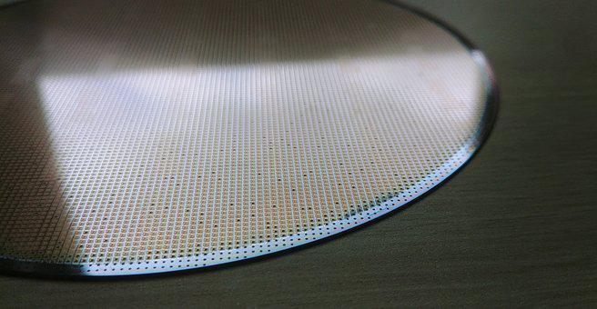

Study Micro Engineering in Germany and get introduced to the art and study of making, planning, incorporating, and fabricating small parts, instruments, and systems. The main quality of this area is its multidisciplinary nature; a micro engineering system coordinates electronic and mechanical components with computational, chemical, and optical components, as well as with different materials. Moreover, a gadget’s manufacturing angles areas critical to micro engineering as its capacity. Masters in Micro Engineering in Germany is an optimal preparation towards inventive applications in exceptionally attractive areas, for example, portable specialized gadgets, biomedical gadgets, the watch business, etc.
The today’s businesses create gadgets more and more modest. So if you are focusing on Micro Engineering in Germany, then there are many career choices ahead. Presently, micro innovation makes production and use gadgets, frameworks and other parts of the size of micrometer or even nanometer. Continuously more modest and smaller size, this is the motto of particular hardware makers. These gadgets can be tracked down or upstream in the plan of machines for development of these products. These creation of machines also comprises of small parts and other small gadgets used in this. Masters in micro engineering in Germany can lead you to new multidiscipline new points: miniature innovation frameworks are created with PC hardware, synthetic, mechanical, optical, and different materials.